Instead, we run the program at random, but I will categorize the cases I have encountered.
1. Additional cases of border movement, second obstacle outside the area, at the end of it

It is a closed corner case where the distance to the obstacle is 4, the area is 1W, and we enter later.
Because the field 1 right and 1 up is taken, the area needs to be defined as:

The previous rules can be transferred into this new group.
1. Additional cases of border movement, second obstacle outside the area, at the end of it
It is a closed corner case where the distance to the obstacle is 4, the area is 1W, and we enter later.
Because the field 1 right and 1 up is taken, the area needs to be defined as:
The previous rules can be transferred into this new group.
165
2. Start obstacle inside

It is again about the movement rules on the area border, but it is a new case. If the area at 5 distance is 1W, we can enter later, but we have to step up from there in order to be able to exit at the farthest white field. This conflicts with the obstacle inside.
It is again about the movement rules on the area border, but it is a new case. If the area at 5 distance is 1W, we can enter later, but we have to step up from there in order to be able to exit at the farthest white field. This conflicts with the obstacle inside.
166
The pattern remains true if we offset the first obstacle by one.

167
Here, the distance to the first obstacle is shorter.

At the previous step, the area is 1W. (1B with the shown checkerboard.) Looking at the rule represenation, stepping right is already disabled, but we cannot step straight either due to the second obstacle.
To group these situations, first we check the area like this:

Then, depending on the distance, we will know that we need to step up after entering the area in the following cases:
At the previous step, the area is 1W. (1B with the shown checkerboard.) Looking at the rule represenation, stepping right is already disabled, but we cannot step straight either due to the second obstacle.
To group these situations, first we check the area like this:
Then, depending on the distance, we will know that we need to step up after entering the area in the following cases:
168
3 distance: 1W
4 distance: 1B, but this situation cannot arise, because then we wouldn't be able to enter the area now.
5 distance: 1W
6 distance: If the area is 1B, it can be filled without having to enter at the first black field or having to step up if we do so.
The rule has three rotations. The obstacle defining the area can be:
- Up left side
- Right up side
- Bottom right side
The second obstacle is in mid across position relative to the entry point as we have seen in the examples. But we do not go wrong if we include checking for an across obstacle, and indeed, there is one here:
4 distance: 1B, but this situation cannot arise, because then we wouldn't be able to enter the area now.
5 distance: 1W
6 distance: If the area is 1B, it can be filled without having to enter at the first black field or having to step up if we do so.
The rule has three rotations. The obstacle defining the area can be:
- Up left side
- Right up side
- Bottom right side
The second obstacle is in mid across position relative to the entry point as we have seen in the examples. But we do not go wrong if we include checking for an across obstacle, and indeed, there is one here:
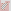
169
We can also make the rule general by adding stairs to the beginning. As long as the area is 1W, a start obstacle should be checked for.


170
3. Double obstacle inside

If we fill all three areas, a field in the middle will be missed.
Let's examine this area:


The area is 1W. We have to enter at the first white field and exit at the second. The second black field needs to be filled, so it gives us two possible enter / exit movements. In either scenario, a mid across obstacle is encountered inside the area.
If we fill all three areas, a field in the middle will be missed.
Let's examine this area:
The area is 1W. We have to enter at the first white field and exit at the second. The second black field needs to be filled, so it gives us two possible enter / exit movements. In either scenario, a mid across obstacle is encountered inside the area.
171


Again, the area is 1W. There is a field between the entry and the exit field, and we encounter an obstacle inside there area no matter if we fill it after entry or before exit.


The area is 1W here as well.
172
And here is the case for 2 distance, with 1W area:


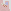
173
4. Double obstacle outside
It is a straight obstacle case with extended area where two close obstacles are present outside. The area is 1W according to following illustrations:


If we enter later at the first black field, the corner white will have to be filled.
If we enter at the first white field, we collide with the closest close obstacle.
It is a straight obstacle case with extended area where two close obstacles are present outside. The area is 1W according to following illustrations:
If we enter later at the first black field, the corner white will have to be filled.
If we enter at the first white field, we collide with the closest close obstacle.
174
The same area definition at 3 distance will solve Triple Area Exit Down, making the previous solution obsolete. The area is now W = B.


Instead of an upper obstacle, here we have a C-shape, but its function is the same.
Instead of an upper obstacle, here we have a C-shape, but its function is the same.
175
There can be two obstacles outside with a different start area as well:


If we step straight, there are two ways to fill an 1W area. In the first, we collide with the end obstacle, and in the second, the start obstacle.
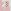
If we step straight, there are two ways to fill an 1W area. In the first, we collide with the end obstacle, and in the second, the start obstacle.
176
Increasing the distance by 1 and the area to 2W, in order to make the area, we either have fill the last white field alone or the first as a corner. The middle white will be either entry or exit point, with the preceding/following field the neighbor black:


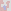
177
And the pattern can be extended along a stair:


The area is 2B. If we enter now, we have to exit at a black field and then fill the remaining to as corners.
The area is 2B. If we enter now, we have to exit at a black field and then fill the remaining to as corners.
178
Similarly:


In the left representation, we enter at the first left field. On the right, we entered at the first black and exit there. In either case, if the area is 2W, we cannot enter later.
In the left representation, we enter at the first left field. On the right, we entered at the first black and exit there. In either case, if the area is 2W, we cannot enter later.
179
5. Stair at start
To continue the previous pattern, here is a case where there does not need to be a double obstacle at the exit point of the stair, but the area border has the same shape. The area is W = B.

At the exit point, an impair area is created with the second obstacle.
To continue the previous pattern, here is a case where there does not need to be a double obstacle at the exit point of the stair, but the area border has the same shape. The area is W = B.
At the exit point, an impair area is created with the second obstacle.
180
6. Start obstacle outside

With a 2W area, if we step straight, we have to step right afterwards. This conflicts with the obstacle on the right.
This and the previous rule can be made universal to include distances to the first obstacle increased by a multiple of 4.
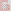
With a 2W area, if we step straight, we have to step right afterwards. This conflicts with the obstacle on the right.
This and the previous rule can be made universal to include distances to the first obstacle increased by a multiple of 4.
181
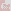

The area is the extended version of the y vertical distance, 0 horizontal distance rule. (The first area we examined, at page 71.) It is not necessary to decide whether we can enter now or later, it is already taken care of by the other single area groups. But there is a close obstacle at the entry point outside the area. If, at 4 distance, the area is 1W, we enter at the first white field, from which we step down and left.
Therefore, we cannot enter later.
182
Here, we have to extend the area of the previous example along the short axis. The area is still 1W.

But we don't have to define this area separately. The x and y distance obstacle will solve it too:

But we don't have to define this area separately. The x and y distance obstacle will solve it too:
183
It can be proved that the corner at (3,3) position does not do anything, so it is not a double obstacle outside case. The rule still holds if we move that obstacle.
184
In the next example, the area is xB where x is the height of the stair representation.

If we enter now, the corner blacks will have to be filled separately, so we must exit the first line at the last black field. This will conflict with the mid across obstacle.
If we enter now, the corner blacks will have to be filled separately, so we must exit the first line at the last black field. This will conflict with the mid across obstacle.
185
7. End obstacle outside at x and y distance
We began the border movement rules with end obstacles that were close relative to the exit point. This has to be extended so that if we find any corner at x and y distance in the upper left quarter that makes up an area we cannot enter later, the rule applies. But first, let's look at some cases we have missed.

The area is 1B. If we enter now, we have to reserve the first corner black for later, so we exit at the second black for the first time. There have been found a case where the end obstacle can be in across position as well.
We began the border movement rules with end obstacles that were close relative to the exit point. This has to be extended so that if we find any corner at x and y distance in the upper left quarter that makes up an area we cannot enter later, the rule applies. But first, let's look at some cases we have missed.
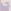
The area is 1B. If we enter now, we have to reserve the first corner black for later, so we exit at the second black for the first time. There have been found a case where the end obstacle can be in across position as well.
186
And the next is the extension with the second area:

Here, the first area is 1B, so if we enter now, we will exit at the first black field, coming from above. This creates a second area, which is 1W, so we cannot enter it later.
Here, the first area is 1B, so if we enter now, we will exit at the first black field, coming from above. This creates a second area, which is 1W, so we cannot enter it later.
187
The followings are variations, with different start areas.
Here, the area is 1B:

W = B:

Here, the area is 1B:
W = B:
188
W = B:


When we have an obstacle 2 horizontal and 3 vertical distance away, and the area is 1B, the corner black has to be filled separately, and the border movement will make up a stair. For the second step, the area with the new obstacle is 1W, so we cannot enter it later.
When we have an obstacle 2 horizontal and 3 vertical distance away, and the area is 1B, the corner black has to be filled separately, and the border movement will make up a stair. For the second step, the area with the new obstacle is 1W, so we cannot enter it later.
189

This is the stair pattern from page 150, which we had abandoned in favor of area rules. We have already worked it out at a lesser distance:

So to make it universal, we can say that if the vertical distance (y) = horizontal distance (x) + 2, and the area is xB, and we have the second obstacle present, we cannot enter now.
Is the second obstacle a close obstacle relative to the field 1 left and 2 up, or can it occur at any point of the stair? Can it be a far obstacle, creating an area we must enter? We need examples to answer there questions.
190
But here is another stair case. This time the entry point is from below.

The examined area is 1B. Only stepping up has to be disabled, we can step left and enter the area going 2 up, 1 right, 1 down and 1 right. An extension of this would look like:

If the horizontal distance to the first obstacle is x, an xB area satisfies the condition.
The examined area is 1B. Only stepping up has to be disabled, we can step left and enter the area going 2 up, 1 right, 1 down and 1 right. An extension of this would look like:
If the horizontal distance to the first obstacle is x, an xB area satisfies the condition.
191
The next example shows a stair where there is a far obstacle at the end.
192
If we reverse the horizontal and vertical distance for the first obstacle, we find ourselves in a similar situation.

In order to make the 1B area, we need to exit at the second black field, and a stair pattern will be drawn from there.
Again, the distance can be increased, the area is now 2B:

In order to make the 1B area, we need to exit at the second black field, and a stair pattern will be drawn from there.
Again, the distance can be increased, the area is now 2B:
193
8. Stair at end convex

The area marked by the rule is 1B. So if we enter now, we have to exit at the farthest black field, becase the closest one will need to be filled separately. This will create an area with the upper left obstacle in the rule that needs to be pair, but in the example it is 3 x 3.
When we extend the rule (with the start area being 2B now), it is clear where the stair edge will be.

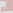
The area marked by the rule is 1B. So if we enter now, we have to exit at the farthest black field, becase the closest one will need to be filled separately. This will create an area with the upper left obstacle in the rule that needs to be pair, but in the example it is 3 x 3.
When we extend the rule (with the start area being 2B now), it is clear where the stair edge will be.
194
This is a variation where, if we enter later, we will not be able to exit because of the second obstacle.
195
9. Stair at end convex + stair sequence
It is the first case of sequence (page 142) where multiple steps have to be applied, just like we did at the second and third case.


Notice the start area has a convex borderline, and it forms a 3-long flat top and a stair-shaped leg in the generalized rule. On the left, the area is 1B, and on the right it is 2B.
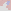
It is the first case of sequence (page 142) where multiple steps have to be applied, just like we did at the second and third case.
Notice the start area has a convex borderline, and it forms a 3-long flat top and a stair-shaped leg in the generalized rule. On the left, the area is 1B, and on the right it is 2B.
196
When we step to the left to enter a white field, we have to exit at the farthest black field. The corner blacks have to be filled individually.
The start obstacle can be shifted by one vertically, and it will give us the same pattern.

The start obstacle can be shifted by one vertically, and it will give us the same pattern.
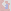
197
10. Stair + 2 obstacles
In this case, the line would continue on the right after exiting the area until it conflicts with an obstacle on the opposite side.


On the right, a theoretical extension is shown. The blue fields cannot be filled.
For now, we apply the mid across obstacle to the last step, and the across to the last before one, but there might come other combinations, like in the next case:
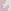
In this case, the line would continue on the right after exiting the area until it conflicts with an obstacle on the opposite side.
On the right, a theoretical extension is shown. The blue fields cannot be filled.
For now, we apply the mid across obstacle to the last step, and the across to the last before one, but there might come other combinations, like in the next case:
198
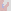

These cases were previously solved by applying a sequence on the right side after exiting an area on the left. This should, and can be avoided if we simplify the algorithm.
199
11. 3 x 3 Stair
This is another case where the sequence would be applied on the opposite of the normal side.
Instead, we solve it with a specific pattern.
If one case that does not fit into the system, it is okay to treat it separately. If more, similar cases are found in the future, they can be grouped. Compare this with the previous cases.
This is another case where the sequence would be applied on the opposite of the normal side.
Instead, we solve it with a specific pattern.
If one case that does not fit into the system, it is okay to treat it separately. If more, similar cases are found in the future, they can be grouped. Compare this with the previous cases.
200
12. Reverse stair
The line in this case has to make a stair as shown on page 179-181, but now we are entering from the end.


Having a W = B area, we either need to enter or exit at the white field. It is an extension of the double obstacle outside rule (page 175).
There have been found cases where the left obstacle is mid across, and the right obstacle is a C-shape.
The line in this case has to make a stair as shown on page 179-181, but now we are entering from the end.
Having a W = B area, we either need to enter or exit at the white field. It is an extension of the double obstacle outside rule (page 175).
There have been found cases where the left obstacle is mid across, and the right obstacle is a C-shape.
201
13. Reverse stair 3 obstacles
At every 10 million attempts, a pattern like this emerges:

It is easy to see the parts that contribute to the case being impossible, but how do we define a universal or simplified rule?
Below the first pattern descibes the exit point of the pair area (A), while the second is the border movement rule with the end obstacle at the start point B.


In order to fill the marked area with respect to the end obstacle, we need to enter at either C or D. But because of E, we cannot step from A to C, and because of E and F, we cannot reach D.
At every 10 million attempts, a pattern like this emerges:
It is easy to see the parts that contribute to the case being impossible, but how do we define a universal or simplified rule?
Below the first pattern descibes the exit point of the pair area (A), while the second is the border movement rule with the end obstacle at the start point B.
In order to fill the marked area with respect to the end obstacle, we need to enter at either C or D. But because of E, we cannot step from A to C, and because of E and F, we cannot reach D.
202
The next example will shed more light onto the pattern.
If we make a stair shaped pattern that leads up to the first obstacle, it is clear that there are only two possible entry points if the second obstacle is taken into account.
- 1 straight
- 3 straight and 2 right


Now let's check if we can get to any of these fields and enter the area afterwards.
It is evident that if we step straight, we cannot step right because of the C-shape on the left.
If we make a stair shaped pattern that leads up to the first obstacle, it is clear that there are only two possible entry points if the second obstacle is taken into account.
- 1 straight
- 3 straight and 2 right
Now let's check if we can get to any of these fields and enter the area afterwards.
It is evident that if we step straight, we cannot step right because of the C-shape on the left.
203
But how do we explain that we are unable to get to the far entry point?
In the following representation the three important obstacles are shown. The area occupied by the stair is dark gray, and the return path by the far obstacle we must leave empty is light gray. We need to get to point A.

We can check for a left close obstacle at the first green field, and a left and right close obstacle at the second.
Theoretically, if we extended the length of the stair by one, the following fields would have to be checked:

Because of the stair shape, it is certain that we would enter the second green field from below.
In the following representation the three important obstacles are shown. The area occupied by the stair is dark gray, and the return path by the far obstacle we must leave empty is light gray. We need to get to point A.
We can check for a left close obstacle at the first green field, and a left and right close obstacle at the second.
Theoretically, if we extended the length of the stair by one, the following fields would have to be checked:
Because of the stair shape, it is certain that we would enter the second green field from below.
204
The next case uses the stair area described in the previous chapter, so that it has 3 fields in the top row. Because of the blue obstacle, A is the entry point, and similarly to the previous example, we get stuck at the green field if we do not enter now.

No more cases are found after several days of running. It is time to move on to the 13 x 13 board.
No more cases are found after several days of running. It is time to move on to the 13 x 13 board.
205
An example for the Reverse stair 3 obstacles is quickly found where the stair is a step longer.
206
14. Stair at end concave
We have seen this pattern before. It is the Double obstacle inside (page 172), but now it starts with a stair.


Since the area is 1W, we enter at the first white field and exit at the second. The black in between will be either filled after entry or before exit. In both cases, there is a close obstacle in the way.
It is easy to see that the stair part can be extended to any length.
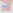
We have seen this pattern before. It is the Double obstacle inside (page 172), but now it starts with a stair.
Since the area is 1W, we enter at the first white field and exit at the second. The black in between will be either filled after entry or before exit. In both cases, there is a close obstacle in the way.
It is easy to see that the stair part can be extended to any length.
207
And also, the top can be a field longer, so it will solve the second case of Double obstacle inside as shown on page 173:


208
This is a variation of the Double obstacle inside pattern at 4 distance (page 172):


This time, we have a C-shape at the far end. This can be applied to any of the three other distances as well.
This time, we have a C-shape at the far end. This can be applied to any of the three other distances as well.
209
In the following, the stair of the area border starts from the field straight ahead. The area is 2W, so if we enter that field, we need to exit again, but there is a close obstacle inside.
The extensions would look like this:
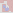
The extensions would look like this:
210
If the other way were chosen:
This is a variation, with the top of the stair being one field longer.
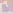
This is a variation, with the top of the stair being one field longer.
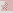
211
And here, the second obstacle is not a close one, but the area it creates is 1B, so it cannot be walked through.
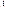
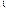
212
The following case is similar, only the first obstacle is not a corner but a straight wall:
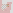
213
15. Stair at start concave
This is the basic corner + area rule where, if the enter later, the border should be walked like this (the area is 2W):
This conflicts with the across obstacle inside the area.
This is the basic corner + area rule where, if the enter later, the border should be walked like this (the area is 2W):
This conflicts with the across obstacle inside the area.
214
16. Remote stair
In the next example, the 3-long wall on the left together with the stair going downwards right encloses and area where the live end makes a near obstacle with one of the fields on the borderline.

To start with, we can search for a corner obstacle enclosing a big area; its relative y coordinate must be x + 3. From there, taking each field to left and down, we check for the closest wall on the left side. If it is 2 distance away, the pattern is found and depending on the number of steps taken, the live end now acts as a close mid across obstacle, so we can only step left. Of course, the area has to be white = black.
In theory, the live end can also be a close across obstacle. In that case, the corner obstacle is y = x + 4.
In the next example, the 3-long wall on the left together with the stair going downwards right encloses and area where the live end makes a near obstacle with one of the fields on the borderline.
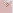
To start with, we can search for a corner obstacle enclosing a big area; its relative y coordinate must be x + 3. From there, taking each field to left and down, we check for the closest wall on the left side. If it is 2 distance away, the pattern is found and depending on the number of steps taken, the live end now acts as a close mid across obstacle, so we can only step left. Of course, the area has to be white = black.
In theory, the live end can also be a close across obstacle. In that case, the corner obstacle is y = x + 4.
215
17. Sequence extensions
There are new sequence cases. A logical way to structure them is to group them by the start obstacle placement. They will be given as "horizontal distance, vertical distance", and the side they are on is called left, even if in the example it is mirrored. I will also write how many rotations are possible. If the obstacle placement is on the left in the first rotation, the second will change it to be straight ahead, the third to the right, the fourth to behind.
Until now, we only checked for C-shapes and close obstacles on the left side, but it will soon change. Remote corner obstacles have to be checked for, which create an area we cannot enter later.
For completeness, I will include situations we are already familiar with.
There are new sequence cases. A logical way to structure them is to group them by the start obstacle placement. They will be given as "horizontal distance, vertical distance", and the side they are on is called left, even if in the example it is mirrored. I will also write how many rotations are possible. If the obstacle placement is on the left in the first rotation, the second will change it to be straight ahead, the third to the right, the fourth to behind.
Until now, we only checked for C-shapes and close obstacles on the left side, but it will soon change. Remote corner obstacles have to be checked for, which create an area we cannot enter later.
For completeness, I will include situations we are already familiar with.
216
3, 0
Two rotations.
C-shape left, area right
Area left, mid across right
Two rotations.
C-shape left, area right
Area left, mid across right
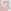
217
C-shape left, mid across right
Across left, mid across right
Across left, mid across right
218
3, -1
Three rotations.
C-shape left, across right
4, 0
Three rotations.
C-shape left, mid across right
Three rotations.
C-shape left, across right
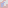
4, 0
Three rotations.
C-shape left, mid across right
219
4, -1
Three rotations.
Across left, mid across right
C-shape left, across right
Three rotations.
Across left, mid across right
C-shape left, across right
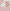
220
Mid across left, across right
Area left, mid across right
When the horizontal distance of the start obstacle is over 4, the chances are that no sequence exist, because the line can exit and re-enter the start area, filling some fields outside of it.
Area left, mid across right
When the horizontal distance of the start obstacle is over 4, the chances are that no sequence exist, because the line can exit and re-enter the start area, filling some fields outside of it.
221
2, 1 (stair shape)
First and fourth rotation.
C-shape left, area right
Across left, mid across right
First and fourth rotation.
C-shape left, area right
Across left, mid across right
222
C-shape left, across right
223
0, 3 and 1, -1
Two rotations
If we take one step straight, we are at the previous case, only we cannot avoid going left from there.
C-shape left, across right
Two rotations
If we take one step straight, we are at the previous case, only we cannot avoid going left from there.
C-shape left, across right
224
Although the end of the sequence can consist of multiple combinations of:
- c-shape left
- mid across left
- scross left
- area left
and
- mid across right
- across right
- area right,
each step of it is either a c-shape or a mid across on the left side. In the latter case, the line changes direction.
Here is an example walkthrough:
- c-shape left
- mid across left
- scross left
- area left
and
- mid across right
- across right
- area right,
each step of it is either a c-shape or a mid across on the left side. In the latter case, the line changes direction.
Here is an example walkthrough:
225
But the sequence algorithm is not complete.
Look at this case:
Although it is obvious we cannot step straight here, a case could be constructed where the close mid across obstacle would not be present. And the sequence runs into an error unless we check for a straight C-shape on the right side whenever a step is found on the left. This has to be done two steps back in the example.
226
If we run statistics after completing section 2 (Start obstacle inside), it turns out that without these area border movement rules, the average number of walkthroughs before getting an error is 293, based on 100 attempts. By adding them, the number increases to 695. It tells us that in over half of the failures, this is the solution.
This is a useful tool for debugging too. If, by introducing a new rule set, the errors become more frequent, there is a mistake in the algorithm.
When we finished the 7 x 7 grid, the statistics gave us 5.7 walkthroughs on 11 x 11 using those rules.
By developing the algorithm further, we have solved 99% of the cases we could not at that time. We get a little less ratio on a 21 x 21 grid, but of a similar order of magnitude: 9 vs. 0.2.
Taking into account all discovered rules, there is no unsolved case on the 11 x 11 board after running 1 million random cases. For 13 x 13, the error rate is 1 in 4000.
This is a useful tool for debugging too. If, by introducing a new rule set, the errors become more frequent, there is a mistake in the algorithm.
When we finished the 7 x 7 grid, the statistics gave us 5.7 walkthroughs on 11 x 11 using those rules.
By developing the algorithm further, we have solved 99% of the cases we could not at that time. We get a little less ratio on a 21 x 21 grid, but of a similar order of magnitude: 9 vs. 0.2.
Taking into account all discovered rules, there is no unsolved case on the 11 x 11 board after running 1 million random cases. For 13 x 13, the error rate is 1 in 4000.
227
The 16 rule categories is as simple as the algorithm gets at this point. So far, every case has been solvable using them, and I expect it to continue like that. The new errors should point to missing cases in the algorithm or a finite amount of new, similar patterns will emerge.
Maybe some of them can be grouped to simplify things, but the ideal solution would be something that is based on a single idea, even if several cases have to be examined due to the number of directions and rotations available. The single area rule, where we counted the number of black and white fields and compared them to the border line, met these criteria, but it was not enough.
If the solution involves examing a multitude of patterns, there will be no way to prove that we have covered all cases either. We have just found an algorithm that reliably goes through a square grid.
Maybe some of them can be grouped to simplify things, but the ideal solution would be something that is based on a single idea, even if several cases have to be examined due to the number of directions and rotations available. The single area rule, where we counted the number of black and white fields and compared them to the border line, met these criteria, but it was not enough.
If the solution involves examing a multitude of patterns, there will be no way to prove that we have covered all cases either. We have just found an algorithm that reliably goes through a square grid.
228
An unsolved case that does not easily fit into the system:
Observable patterns:
The concave area is 3B. There are 2 corner black fields and 3 non-corner black fields, so if we enter now, the border movement has to be as shown on the picture. But due to the internal wall shape, a second line is drawn, which start we cannot get to.
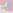
Observable patterns:
The concave area is 3B. There are 2 corner black fields and 3 non-corner black fields, so if we enter now, the border movement has to be as shown on the picture. But due to the internal wall shape, a second line is drawn, which start we cannot get to.
229
If the other way were chosen:
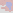
230
New cases and solutions that need classification
2926_0302_7; Stair at start convex 3 uses CheckNearFieldSmallRel that is not valid to far corners, but this scenario could exist. CheckCorner1 could also be rewritten to be valid for C-shapes as in this example. Rule:
2024_0710, 2026_0301_1 Stair at start convex straight 3
2024_0611 needs extension
2926_0302_7; Stair at start convex 3 uses CheckNearFieldSmallRel that is not valid to far corners, but this scenario could exist. CheckCorner1 could also be rewritten to be valid for C-shapes as in this example. Rule:
2024_0710, 2026_0301_1 Stair at start convex straight 3
2024_0611 needs extension
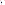
231
2024_0618_2, 2026_0302_6, 2026_0304_1, 2026_0304_5; Stair at start convex straight 4 1W
2024_0727_4, 2024_0725: start obstacle outside as well

2024_0610_4, 2024_0610_5, 121670752, 0627; 1B (currently LeftRightAreaUpExtended ex % 4 = 0):
2025_0527, 2026_0302_4, 2026_0302_5; Stair at end concave straight 3:
2024_0727_4, 2024_0725: start obstacle outside as well
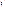
2024_0610_4, 2024_0610_5, 121670752, 0627; 1B (currently LeftRightAreaUpExtended ex % 4 = 0):
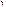
2025_0527, 2026_0302_4, 2026_0302_5; Stair at end concave straight 3:
232
2026_0304_2, 2026_0304_6; Stair at end concave 5:
2026_0304_4, 2026_0301, 2026_0302_1, 2026_0304_7; Stair at end concave straight 5 is rewritten for vertical position.
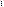
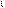
2026_0304_4, 2026_0301, 2026_0302_1, 2026_0304_7; Stair at end concave straight 5 is rewritten for vertical position.
233
2026_0302 Stair at end concave straight 6
Area is 1B. If we enter now and exit at the nearest blue line, the area with the second obstacle is still 1B and cannot be filled. We cannot first exit at the farthest blue line due to the obstacle inside that does not leave space to get there.
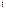
Area is 1B. If we enter now and exit at the nearest blue line, the area with the second obstacle is still 1B and cannot be filled. We cannot first exit at the farthest blue line due to the obstacle inside that does not leave space to get there.
234
Program hotkeys
Main window:
Enter:
- Reload
- Remove cursor from references text boxes
Escape: Close settings
Space: Start/stop run at 10 steps per second
Ctrl + S: Save
E: Open settings
R: Open rules
C: Copy algorithm to console app
D: Disable rules
Ctrl + D: Extract difference (not currently used)
F: Mark further line with blue background
Ctrl/Shift or Caps Lock is on + arrows: Move line
Left: Previous step
Right: Next step
Rules window:
To create a rule, drag and drop the squares into the grid, or press their corresponding numbers while the mouse points at the desired position in the grid.
Click on a placed square to delete it.
In case of future line (number 9), press the arrows after placing the start and finish by Esc or Enter.
Main window:
Enter:
- Reload
- Remove cursor from references text boxes
Escape: Close settings
Space: Start/stop run at 10 steps per second
Ctrl + S: Save
E: Open settings
R: Open rules
C: Copy algorithm to console app
D: Disable rules
Ctrl + D: Extract difference (not currently used)
F: Mark further line with blue background
Ctrl/Shift or Caps Lock is on + arrows: Move line
Left: Previous step
Right: Next step
Rules window:
To create a rule, drag and drop the squares into the grid, or press their corresponding numbers while the mouse points at the desired position in the grid.
Click on a placed square to delete it.
In case of future line (number 9), press the arrows after placing the start and finish by Esc or Enter.
235
11 x 11 estimates
9 x 9 total: 2 688 307 514
Multiplications when increasing the board:
3 to 5: 104/2 = 52
5 to 7: 111712/104 = 1074.15
7 to 9: 2 688 307 514 / 111 712 = 24064.63
Added number of fields respectively:
+16 fields
+24 fields
+32 fields
Bases per added field:
16√52 = 1.2801
24√1074.15 = 1.3375
32√24064.63 = 1.3706
Differences of bases:
0.0574
0.0331
Next difference estimate: 0.0331 * 331/574 = 0.0191
Next base: 1.3897
2 688 307 514 * 1.3897 ^ 40 = 1402 trillion (Actual value according to OEIS: 1445 trillion)
9 x 9 total: 2 688 307 514
Multiplications when increasing the board:
3 to 5: 104/2 = 52
5 to 7: 111712/104 = 1074.15
7 to 9: 2 688 307 514 / 111 712 = 24064.63
Added number of fields respectively:
+16 fields
+24 fields
+32 fields
Bases per added field:
16√52 = 1.2801
24√1074.15 = 1.3375
32√24064.63 = 1.3706
Differences of bases:
0.0574
0.0331
Next difference estimate: 0.0331 * 331/574 = 0.0191
Next base: 1.3897
2 688 307 514 * 1.3897 ^ 40 = 1402 trillion (Actual value according to OEIS: 1445 trillion)
236
Exact calculation line:
2688307514 * ((2688307514/111712) ^ (1/32) + ((2688307514/111712) ^ (1/32) - (111712/104) ^ (1/24)) * ((2688307514/111712) ^ (1/32) - (111712/104) ^ (1/24)) / ((111712/104) ^ (1/24) - (104/2) ^ (1/16))) ^ 40
2688307514 * ((2688307514/111712) ^ (1/32) + ((2688307514/111712) ^ (1/32) - (111712/104) ^ (1/24)) * ((2688307514/111712) ^ (1/32) - (111712/104) ^ (1/24)) / ((111712/104) ^ (1/24) - (104/2) ^ (1/16))) ^ 40
237
Development / correction notes
Current statitics: 1 error in 6348 random walkthroughs, averaged from 50 runs.
Developments:
2024_0716; Straight small cases need to be reviewed and reclassified as middle cases between stair at start and stair at end.
For all stair at start/end rules, extend to any distance beyond 3-6.
Calculate next step enter left and right for any AreaUp and Corner distance. (page 129)
Extend 0720_3 case to any horizontal distance (page 180)
Check if opposite empty fields should be disabled at certain rotations of the 4 single area rule groups. (fx. LeftRightAreaUpExtended closed corner 4: Cannot step down). A safety check can be impelmented: if the left and right direction is available but the straight direction is disabled, and there is not a close obstacle/corner on both sides, it is an error.
Current statitics: 1 error in 6348 random walkthroughs, averaged from 50 runs.
Developments:
2024_0716; Straight small cases need to be reviewed and reclassified as middle cases between stair at start and stair at end.
For all stair at start/end rules, extend to any distance beyond 3-6.
Calculate next step enter left and right for any AreaUp and Corner distance. (page 129)
Extend 0720_3 case to any horizontal distance (page 180)
Check if opposite empty fields should be disabled at certain rotations of the 4 single area rule groups. (fx. LeftRightAreaUpExtended closed corner 4: Cannot step down). A safety check can be impelmented: if the left and right direction is available but the straight direction is disabled, and there is not a close obstacle/corner on both sides, it is an error.
238
Improvements:
Use new CornerDiscovery function everywhere
Review rules if they have unnecessary rotations when disabling a field, fx. straight j = 2 enter later
Review CountArea old and new algorithms
Do not disable a possible field (and display the area) if the field is taken anyway (0725_4, 0731 step straight)
All Sequence patterns should be replaced with stair-area rules like 0725_5. Is it possible? At 0726_2, applying sequence is unnecessary.
In CheckStairAtEndConcaveStraight5, the index of (hori, vert) is compared to (hori, vert + 1) to determine obstacle direction. Does (hori, vert + 1) always exist, or can it be empty or go out of the board?
Display:
Make an arrow at the end of the blue lines, to indicate direction. Important at Stair at end concave straight 6.
Clean up 2025_0522_1, 2025_0525 for irrelevant area rules.
Should we display non-critical border movements in rules? Fx. 0624 vs 0727_1 solutions (page 177-178)
Indicate needed disabled fields in 11 x 11 rule representations?
New pictures where areas were displayed incorrectly.
Cite page numbers when mentioning a rule
Next step left/right areas could be shown in program
Specify future line extension and connection rules on page 3?
Use new CornerDiscovery function everywhere
Review rules if they have unnecessary rotations when disabling a field, fx. straight j = 2 enter later
Review CountArea old and new algorithms
Do not disable a possible field (and display the area) if the field is taken anyway (0725_4, 0731 step straight)
All Sequence patterns should be replaced with stair-area rules like 0725_5. Is it possible? At 0726_2, applying sequence is unnecessary.
In CheckStairAtEndConcaveStraight5, the index of (hori, vert) is compared to (hori, vert + 1) to determine obstacle direction. Does (hori, vert + 1) always exist, or can it be empty or go out of the board?
Display:
Make an arrow at the end of the blue lines, to indicate direction. Important at Stair at end concave straight 6.
Clean up 2025_0522_1, 2025_0525 for irrelevant area rules.
Should we display non-critical border movements in rules? Fx. 0624 vs 0727_1 solutions (page 177-178)
Indicate needed disabled fields in 11 x 11 rule representations?
New pictures where areas were displayed incorrectly.
Cite page numbers when mentioning a rule
Next step left/right areas could be shown in program
Specify future line extension and connection rules on page 3?
239
The corner discovery head can be in any of the 4 quarters and the area is still closed at the right position. Only stop when reaching the corner or passing by the live end.
Find example:
StartObstacleInside corner (nextY - nextX) % 4 = 2 (0619 extension, page 207)
RemoteStair across (0818_1, page 207)
Stair extensions: flat top far away (0725_6) where the end obstacle is far away.
StraightSmall 2 and 3 with stair leg, like StairAtEndConcave5 and 6.
StairAtEndConcave6 with other than 2 x mid across obstacles
To do:
In the rules for 2025_0522 to 2025_0527, the second obstacle is always mid across, but I used CheckNearFieldSmallRel1 which also solves the across cases. They might never occur.
Review page number references
Remove unnecessary markings in the five 1005 examples (sequence walkthrough)
When loading a file, possible fields are not displayed as numbers on the top. Does it only happen when the calculated moves are not the same as in the file?
CheckStairAtEndConvexStraight3 Stair: Can the down field be free in rotation 1?
Find example:
StartObstacleInside corner (nextY - nextX) % 4 = 2 (0619 extension, page 207)
RemoteStair across (0818_1, page 207)
Stair extensions: flat top far away (0725_6) where the end obstacle is far away.
StraightSmall 2 and 3 with stair leg, like StairAtEndConcave5 and 6.
StairAtEndConcave6 with other than 2 x mid across obstacles
To do:
In the rules for 2025_0522 to 2025_0527, the second obstacle is always mid across, but I used CheckNearFieldSmallRel1 which also solves the across cases. They might never occur.
Review page number references
Remove unnecessary markings in the five 1005 examples (sequence walkthrough)
When loading a file, possible fields are not displayed as numbers on the top. Does it only happen when the calculated moves are not the same as in the file?
CheckStairAtEndConvexStraight3 Stair: Can the down field be free in rotation 1?
240
Checking corner is not implemented in CheckStairAtEndConvexStraight3 4, 2 start obstacle before an example is found.
0727_5 is added to Sequence2, but we need to think about a general UpExtended start area where distance to the obstacle % 4 = 3.
Display relevant area rules in examples or clean them up where unnecessary rules are displayed. (For example 1012_1)
StairAtStart: are there 5 and 6-distance top stairs?
Hypothesis: A wrong rule that unnecessarily disables a field does not only limit the number of walkthroughs but will result in a stuck case.
Page 180: rewrite corner 5 1 extended stair 2.svg for stair at end convex straight.
0516_2 is both StairAtEndConvex and StairAtStart (representation: StairAtEndConvex 3 1 now nostair.svg and StairAtEndConvex 3 2 now nostair.svg)
Make pattern set representation: 0625 can be extended vertically, holding a fixed 2 horizontal distance, or in a stair at the far end, so that vert = hori + 2. The two can also be combined. The same can happen with 0625_1, which is just one vertical distance shorter. (Stair extension: 0712)
0727_5 is added to Sequence2, but we need to think about a general UpExtended start area where distance to the obstacle % 4 = 3.
Display relevant area rules in examples or clean them up where unnecessary rules are displayed. (For example 1012_1)
StairAtStart: are there 5 and 6-distance top stairs?
Hypothesis: A wrong rule that unnecessarily disables a field does not only limit the number of walkthroughs but will result in a stuck case.
Page 180: rewrite corner 5 1 extended stair 2.svg for stair at end convex straight.
0516_2 is both StairAtEndConvex and StairAtStart (representation: StairAtEndConvex 3 1 now nostair.svg and StairAtEndConvex 3 2 now nostair.svg)
Make pattern set representation: 0625 can be extended vertically, holding a fixed 2 horizontal distance, or in a stair at the far end, so that vert = hori + 2. The two can also be combined. The same can happen with 0625_1, which is just one vertical distance shorter. (Stair extension: 0712)
241